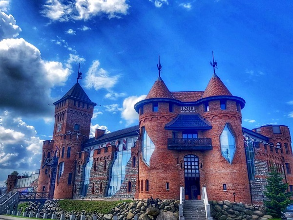
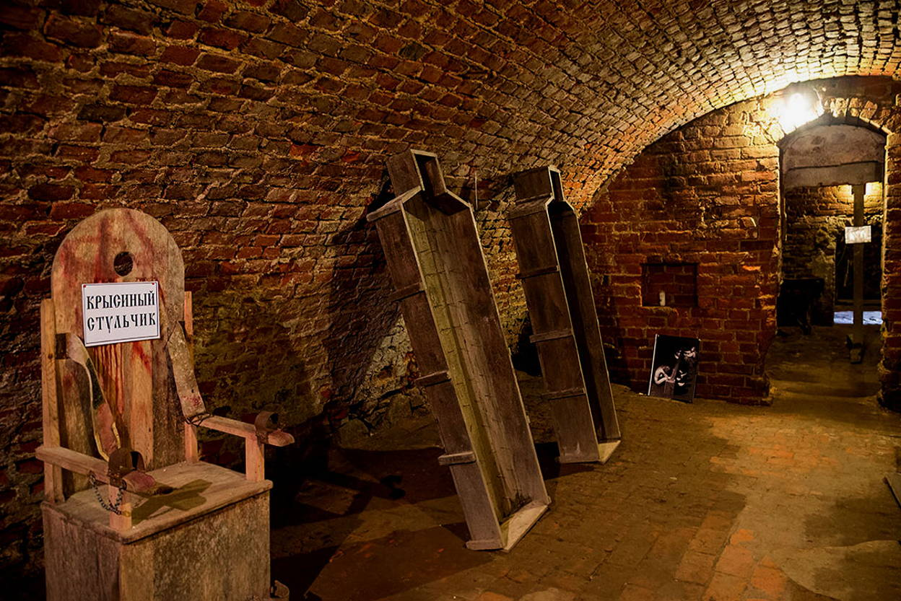

Остров Канта

Кафедральный собор, построенный в начале XX века, является одной из главных достопримечательностей Калининграда. Он расположен на острове Канта и окружен живописным парком. Собор известен своим архитектурным стилем и уникальным органом, на котором проводятся регулярные концерты.
Замок Нессельбек и Музей Пыток
 Парк Яунземсада — это идеальное место для прогулок и отдыха. Здесь вы найдете разнообразные цветочные клумбы, уютные аллеи и пруд, в котором можно увидеть уток. Парк является отличным местом для семейных выходных и предлагает множество возможностей для активного отдыха.
Музей Мирового океана


Парк Яунземсада — это идеальное место для прогулок и отдыха. Здесь вы найдете разнообразные цветочные клумбы, уютные аллеи и пруд, в котором можно увидеть уток. Парк является отличным местом для семейных выходных и предлагает множество возможностей для активного отдыха.
Калининград-Кёнигсберг: прогулка на теплоходе

Парк Яунземсада — это идеальное место для прогулок и отдыха. Здесь вы найдете разнообразные цветочные клумбы, уютные аллеи и пруд, в котором можно увидеть уток. Парк является отличным местом для семейных выходных и предлагает множество возможностей для активного отдыха.
Музей Бункер

Парк Яунземсада — это идеальное место для прогулок и отдыха. Здесь вы найдете разнообразные цветочные клумбы, уютные аллеи и пруд, в котором можно увидеть уток. Парк является отличным местом для семейных выходных и предлагает множество возможностей для активного отдыха.
Башня Дона

Парк Яунземсада — это идеальное место для прогулок и отдыха. Здесь вы найдете разнообразные цветочные клумбы, уютные аллеи и пруд, в котором можно увидеть уток. Парк является отличным местом для семейных выходных и предлагает множество возможностей для активного отдыха.